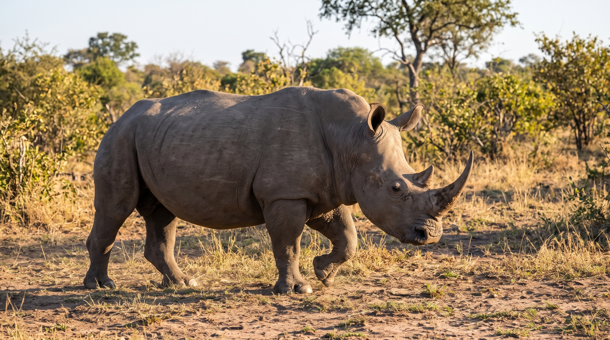

Les Cortan Cuernos a 700 Rinocerontes
En 2016, una noticia sorprendió al mundo de la conservación animal: Zimbabue anunció un ambicioso plan para retirarles los cuernos a los aproximadamente 700 rinocerontes que vivían en el país.
Durante años, estos animales habían sido perseguidos y asesinados por sus cuernos, que se venden en el mercado ilegal por enormes cantidades de dinero. Algunas personas incluso les atribuyen propiedades medicinales que no han sido demostradas científicamente. La situación se había vuelto tan grave que, solamente en 2015, alrededor de 50 rinocerontes fueron asesinados ilegalmente en Zimbabue.
Ante esta amenaza, las autoridades y organizaciones de conservación decidieron tomar una medida extrema: quitarles aquello por lo que los cazadores los perseguían.
El procedimiento no consistía en capturarlos y cortarles los cuernos sin más. Los veterinarios primero los sedaban, vigilaban sus signos vitales y después retiraban cuidadosamente la mayor parte del cuerno, dejando una pequeña base para no dañar el tejido sensible.
Aunque las imágenes pueden parecer dolorosas, hay un detalle sorprendente: el cuerno del rinoceronte está compuesto principalmente de queratina, la misma proteína que forma nuestras uñas y cabello. Por eso, cuando se realiza correctamente, el corte de la parte externa no provoca el dolor que muchos imaginan.
Y todavía hay algo más curioso: ¡los cuernos vuelven a crecer! Por eso, los animales necesitan revisiones y nuevos recortes periódicos para evitar que vuelvan a convertirse en objetivos atractivos para los cazadores.
La estrategia no quedó solamente como una idea. Años después, un estudio científico publicado en 2025, que analizó 11 reservas del entorno del Parque Nacional Kruger, en Sudáfrica, encontró que retirar los cuernos a 2,284 rinocerontes estuvo asociado con una reducción cercana al 78 % de la caza furtiva.
Sin embargo, esta medida también tiene sus limitaciones: los rinocerontes utilizan sus cuernos para defenderse, competir por territorio, buscar alimento y relacionarse con otros individuos. Además, algunos cazadores siguen atacando animales descornados para llevarse incluso los pequeños restos de cuerno.
Una decisión difícil, pero con un propósito desesperado: que los rinocerontes puedan seguir caminando libres, aunque tengan que renunciar temporalmente a aquello que los caracteriza, para no perder la vida por ello.
⏳ La IA está leyendo y evaluando tus respuestas... ¡Espere un momento!